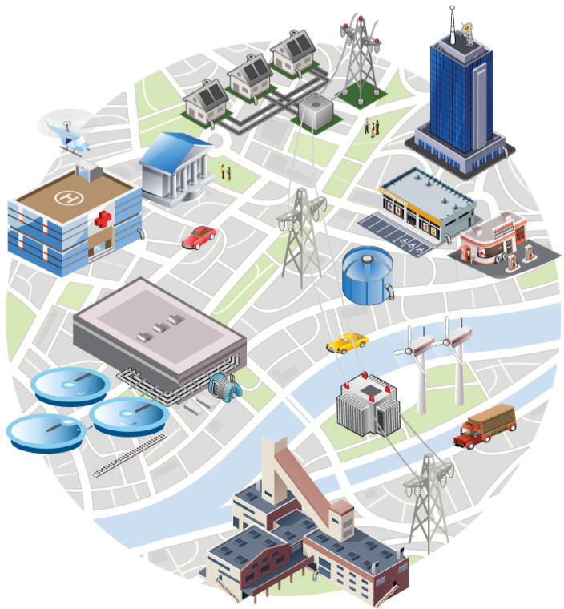
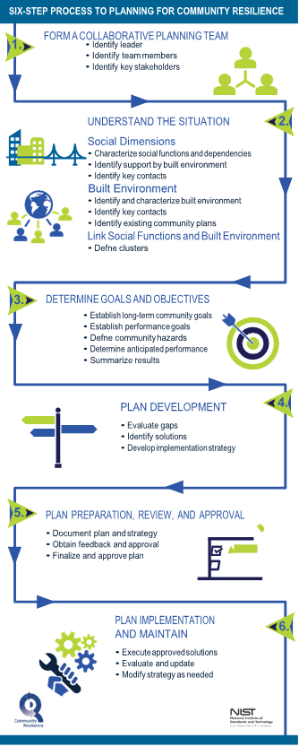

With growing costs and disruptions from natural, technological, and human-caused hazards, many communities are placing higher priority on understanding and mitigating their vulnerability to, and increasing their ability to recover from, these hazards. They also need to manage their resources and ability to address these issues while considering other pressing demands.
A resilient built environment can:
All communities can improve their resilience and capacity to protect lives, livelihoods, and the quality of life for their residents and businesses. The National Institute of Standards and Technology (NIST) Community Resilience Planning Guide for Buildings and Infrastructure Systems (Guide) recognizes that communities must prioritize their limited resources and that improving resilience is a process achieved over time.
The Guide's planning process provides a structured yet flexible way to set community-scale goals, align priorities and resources, identify key stakeholders, and develop plans for recovery of community functions. Community resilience planning can inform and integrate other community plans and also reduce conflicting goals between plans.
Community resilience is the ability of a community to prepare for anticipated hazards, adapt to changing conditions, and withstand and recover rapidly from disruptions.
Residents rely on buildings and infrastructure systems for many functions and services that support the activities of daily living and that underpin the social and economic fabric of their community. By planning, prioritizing, and acting, communities can improve their resilience over time, in a cost-effective manner that is consistent with their long-term resilience goals.
If a disruptive event does occur, communities with resilience plans will be ready to respond, recover, and build back better - if rebuilding is necessary.
Communities that plan and carry out resilience strategies will be better prepared for future events, making the community more attractive to businesses and residents alike.
This Playbook is intended to help communities more easily use the Guide and improve community resilience planning by addressing:
While organized a bit differently, both infrastructure systems and community lifelines refer to physical networks that enable social functions that are essential to human health, safety, and economic security.
Infrastructure Systems: The NIST Guide and Playbook use Infrastructure Systems to describe physical networks (systems and facilities) that provide functions and services to the community. Infrastructure systems include transportation, energy, communications, water and wastewater systems. Building clusters (buildings with common functions) and supporting infrastructure systems are organized by functional categories, such as health, economy, education, or housing, for planning purposes. (See Step 2 for further discussion on building clusters and functional categories.)
Community Lifelines: FEMA uses Community Lifelines to describe the integrated network of assets, services, and capabilities that provide services to support the recurring needs of the community and enable all other aspects of society to function. Community Lifelines provide services that are used day-to-day to support the recurring needs of the community and enable all other aspects of society to function. Community lifelines comprise Safety and Security; Food, Water, and Shelter; Health and Medical; Energy (Power and Fuel); Communications; Transportation; and Hazardous Materials.
The NIST Guide is based on the experience and expertise of community officials who have led planning for and responses to hazard events, as well as technical experts actively engaged in improving resilience across the country. The Guide encourages community leaders - government, private sector, and individuals - as well as community stakeholders to think more holistically and systematically about community resilience and the role of the built environment. It offers an approach to help communities integrate all of their community plans through community resilience planning and goals.
The Guide emphasizes the importance of interdependencies across the built environment, which includes buildings and infrastructure systems - especially those providing transportation, energy, communications, and water and wastewater services. The built environment supports vital social and economic functions such as shelter, food, education, healthcare, business and government. Community services and functions need to recover as quickly as possible, preferably within a specified period of time set by each community.
When recovery of key services and functions is delayed, community residents face increasing challenges to remaining in the community. Residents may ask questions like:
Depending on an event's severity, many people and businesses may need assistance, possibly for an extended period of time.
Community resilience planning helps to determine which buildings and infrastructure systems support critical needs - and must be functional during and immediately after an event. Resilience planning also helps set phased recovery goals for the built environment in terms of community functions and when they should be restored in the subsequent days, weeks, and months.

In the NIST Guide, community refers to a place designated by geographical boundaries that functions under the jurisdiction of a governance structure, such as a town, city, or county.
Communities can best address common issues with planning processes by ensuring:
Resilience plans can be improved over time. Plans should address:
The Guide applies to many types of hazard events and to large or small, urban or rural communities. There are many reasons for communities to start or improve their resilience planning, which the Guide can assist with, such as:
In a perfectly resilient community, all buildings and infrastructure systems would recover rapidly from design level hazard events with little interruption in services. Buildings would remain usable, infrastructure systems would remain operational, and only a few days would be needed to clean up the mess and get back to normal operations.
In reality, buildings and infrastructure systems have been built over generations and are subject to aging and deterioration, changes in use and demands, and falling behind with regards to changing technologies, codes, and regulations. Frequently, a number of buildings and supporting infrastructure systems do not meet current minimum code requirements and are unlikely to contribute to community resilience in their existing condition.
Newer facilities and systems specifically designed for design level hazard events are more likely to contribute to a community's resilience if they require only minor repairs and can resume occupancy and operations shortly after the event.
Not every building and infrastructure system is needed immediately following a hazard event. But it is important that they be available when needed to support recovery. For example:
By setting desired recovery time performance goals for building clusters based on needed social functions and then assessing their anticipated performance, a community can determine the required sequence of recovery activities for its built environment.

The Guide tackles the resilience planning challenge by focusing on the built environment and how it supports community social and economic functions. The approach complements, but is broader than, the hazard mitigation planning conducted by communities to meet Federal Emergency Management Agency (FEMA) requirements for the Hazard Mitigation Assistance Grant, Flood Mitigation Assistance, and Building Resilient Infrastructure and Communities (BRIC) Programs. NIST's approach also is helpful for informing applications to, and management of, disaster mitigation and recovery grant programs of the Department of Housing and Urban Development (HUD), including the Community Development Block Grant Disaster Recovery Program, the Economic Development Administration (EDA), including the development of a Comprehensive Economic Development Strategy (CEDS).
There is no one-size-fits-all approach to community resilience. Although many communities have common characteristics, each truly is unique. The NIST Guide seeks to convey the value of planning for resilience in a holistic, integrated fashion as part of a fully integrated community planning process using the six-steps summarized in the graphic.
Improvements to community resilience do not occur overnight and some priorities could take years or decades to fully be achieved. Still, meaningful progress can be made in shorter time frames. And there are always "low-hanging" options that can be considered once a community agrees on goals and directions. That's especially true if community resilience goals are integrated into all community plans.
The Guide encourages users to obtain input and support from public and private community stakeholders - local government as well as individuals, community organizations, and service providers - to address recovery as well as hazard preparedness, response, mitigation, and adaptation goals. The Guide also helps communities review their current situation, including threats and vulnerabilities, and to identify performance goals and gaps in the performance of buildings and infrastructure. Then it assists communities in prioritizing and addressing those gaps through resilience goals and planning at the community scale.
All communities are encouraged to conduct the first three steps in the Guide. That will enable them to advance beyond the status quo by bringing key stakeholders together (Step 1), characterizing the community's current social and economic needs as well as its built environment (Step 2), and generating performance goals and gaps for building clusters to meet community functions and services (Step 3). Just asking the questions and considering the issues necessary to get to this point in the process can prove useful for communities exploring or embarking on the Guide's process.
The Guide process has two types of performance that are evaluated for buildings and infrastructure systems: desired performance goals and anticipated performance. Desired performance goals are specified by the community in terms of time to recover functions for systems that are essential to the community and its recovery. It is important to note that desired performance goals are "hazard agnostic" because the need for community services and functions does not vary by hazard event. The anticipated performance is an assessment of the time to recover function performance expected for existing community systems if a hazard event occurred tomorrow. The difference between the desired performance (for all hazard events being considered) and the anticipated performance (for specified hazard events) identifies gaps that can negatively affect community recovery and long-term resilience.
Step 4 helps turn a community's enhanced understanding of how its social and economic functions rely upon the built environment and its interdependencies into a plan for moving ahead. After completing step 4, communities are strongly encouraged to move on to Step 5 (Plan Preparation, Review and Approval) and Step 6 (Plan Implementation and Maintenance). A visual overview of this process can be seen on the next page. Details can be seen in the sections that follow each of the 6 steps and via associated links to worksheet templates (online) and the full Guide.
As of March 2020, 25,300 local jurisdictions in the U.S. have developed hazard mitigation plans to reduce risk from natural hazards and to ensure their eligibility for FEMA's Hazard Mitigation Assistance Grant Program. Hazard mitigation is considered to be sustained action taken to reduce or eliminate long-term risk to human life and property from hazards. The range of actions in hazard mitigation plans are similar to and complement those addressed in local plans and regulations that influence land use and development patterns, structure and infrastructure projects, natural systems protection, and education and awareness programs. Communities may use their hazard mitigation plan as a starting point for developing a community resilience plan.
Planning for community resilience emphasizes connecting mitigation and recovery phases of preparedness, but also includes response, protection, and prevention. Community resilience involves understanding how communities and their members' social and economic activities rely on the interconnected elements of the built environment and ensuring the community's goals for recovery of function of social and economic activities drive the prioritization and selection of risk-reducing activities. These activities span a range of constructed and administrative solutions (including those within a hazard mitigation plan). The process of developing hazard mitigation and community resilience plans are complementary.
This Playbook provides a practical, action-oriented aid to help communities follow the Guide's six-step process. It can assist communities seeking insights into resilience planning issues and help identify the most effective resilience-improvement projects. It also helps align community plans with resilience goals when seeking funds to support resilience activities. The Playbook can be used without expert assistance but also offers ways to engage experts in the planning and implementation stages.
This Playbook is designed to be a companion document to the Guide, with a focus on actions to accomplish in each step; it identifies the key concepts and approaches of the Guide. It can be especially useful for communities that wish to address only several of the steps - or simply to introduce the concept of the Guide's planning process and the interdependencies of buildings and physical infrastructure systems.
This Playbook is intended for communities of any size, at any stage of resilience planning, and a range of stakeholders:
Communities can make use of any of the six steps in any order that makes sense to them.
Some communities, for example, may already be on Steps 2 or 3.
However, reviewing Step 1 might help them to identify and add important players to their planning efforts.
This will help develop a more complete plan through broader community input and increase the chances of successful implementation of the plan.
This Playbook is based on the NIST Guide and supplemental materials. It draws on the experience of several communities that have put the Guide to use. Users are encouraged to go to the full Guide for more details when desired. The Playbook also points to complementary materials developed by other federal agencies, non-profit organizations, and states and localities. Appropriate links to sections of the Guide and supporting materials - including templates - are included in "Useful NIST Resources" at the end of each section and in the additional resources available on NIST's Community Resilience website.
NIST Community Resilience Group website: https://www.nist.gov/topics/community-resilience
NIST Community Resilience Planning Guide: https://www.nist.gov/topics/community-resilience/planning-guide
NIST Community Resilience Planning Guide Brochure: https://www.nist.gov/sites/default/files/documents/2016/09/07/151026_nist_communityresilience_brochure_individual-pgs-guide.pdf
Guide Brief 7 - Guide Use by All Community Types: https://nvlpubs.nist.gov/nistpubs/SpecialPublications/NIST.SP.1190GB-7.pdf
Guide Brief 15 - Additional Applications of the Community Resilience Planning Guide: https://www.nist.gov/publications/guide-brief-15-additional-applications-community-resilience-planning-guide
Playbook tables and templates: https://www.nist.gov/el/communityresilience/community-resilience-planning-guide-playbook-templates-additional-resources